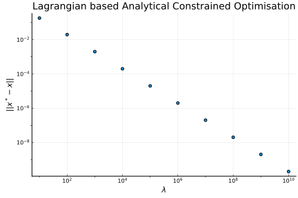

layout: true
<div class="my-header"></div> <div class="my-footer"><img src="assets/iistLogo.jpg" /><p>© 2021 Devendra Ghate</p></div>
class: center, middle
.footnote[
Webinar arranged by Dr. Puneet Kumar (Asst. Prof) for students of Department of Aerospace Engineering, Karunya Institute of Technology and Sciences]
–
Objective function (\(f(x):\mathbb{R} \leftarrow \mathbb{R}^n\))
Equality constraints (\(h(x):\mathbb{R}^{m} \leftarrow \mathbb{R}^n\))
Inequality constraints (\(g(x):\mathbb{R}^p \leftarrow \mathbb{R}^n\))
–
.bottom[ .small[ .center[ In general, all these functions are continuous nonlinear functions. ] ] ]
–
We want to suggest to the pilot a sequence of control inputs to climb from the clearance height to the cruise altitude.
–
Trajectory optimisation aims to provide optimised (in some sense) control sequence:
\[ \left( \delta\_t(t),\ \delta\_e(t),\ \delta\_r(t),\ \delta\_a(t) \right)\ \ \xleftrightarrow\ \ \left( \delta\_t(h),\ \delta\_e(h),\ \delta\_r(h),\ \delta\_a(h) \right) \].left-column[
Minimizing Time-to-climb
(fighter aircrafts)
]
–
.right-column[
Minimizing Fuel Consumption
Minimizing Battery Energy Consumption for an eVTOL aircraft
Minimizing Control Effort (\(\delta\_e\))
(Commercial Civil aviation)
]
–
Maximizing Range
In a given Time
For a given amount of fuel
At a fixed Throttle for a given amount of fuel
–
Multiobjective :
Min (Temperature Rise + Fuel consumption)
Min (Time + Fuel Consumption)
A \(n\) dimensional design space can have a maximum of \(n\) independent linear equality constraints.
.footnote[
There are special algorithms that can handle quadratic constraints more efficiently. Hence, constraints may also be classified as quadratic constraints.]
Constrained optimisation problem
\[ \min_{x}\ f(x) = 10 + x^2 - 8x\\ \ s.t.\ \ x=6 \]–
results in an unconstrained optimisation problem using the Lagrangian
\[ L(x, \lambda) = f(x) + \lambda (x-6) \]where \(\lambda\) is the Lagrange multiplier.
.image-90[]
where \(x \\in \\mathbb{R}^n\), \(h(x) = [h\_1(x), h\_2 (x), \ldots, h\_p (x) ]^T\)
Given the Lagrangian,
\[ \begin{aligned} L(x, v, u, s) &= f(x) + v^T h(x) + u^T g(x) + u^T s\, s^T \end{aligned} \]–
first order necessary conditions of optimality at \((x\_\*, v\_\*, u\_\*)\) are
\[ \begin{aligned} \nabla\_x L &= \nabla\_x f(x\_\*) + v\_\*^T \nabla\_x h(x\_\*) + u\_\*^T \nabla\_x g(x\_\*) = 0\\\\ \nabla\_v L &= h(x\_\*) = 0\\\\ \nabla\_u L &= g(x\_\*) + s^T s = 0\\\\ \nabla\_s L &= s^T u\_\* = 0\\\\ u_* &\ge 0\\\\ s^T s &\ge 0 \end{aligned} \]